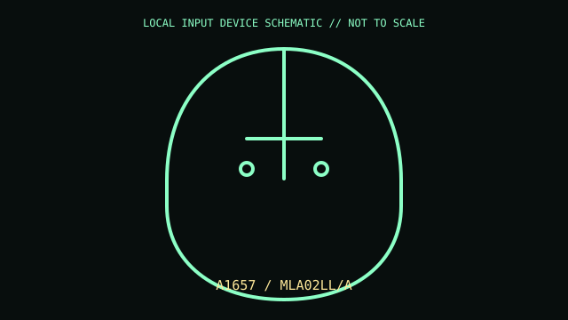

[ MICE AND TRACKBALLS // IDENTIFIED COMPONENT ]
Apple Magic Mouse 2
Rechargeable Bluetooth mouse with a continuous multi-touch top surface.

MODEL IDENTIFICATION: A1657 / MLA02LL/A. Confirm the printed SKU, revision, bundle, region, and included accessories before repair or compatibility claims.
Model specifications
| Catalog leaf | Mice and trackballs |
|---|---|
| Exact model / identifier | A1657 / MLA02LL/A |
| Mechanism and primary specifications | Bluetooth; multi-touch surface for gestures and scrolling; Lightning charge port; internal rechargeable battery; low-profile optical pointing body. |
| Compatibility and interface caveats | A1657 is Lightning-era Magic Mouse 2; later USB-C models have a different port/model. Gestures and pairing behavior are strongest on supported Apple OS versions. |
| Revision identification | Record the full label and software/firmware revision. Similar product-family names may use different protocols, components, connectors, or bundled accessories. |
Preservation and service
Do not pry the sealed cell; keep Lightning port clear and clean the multi-touch shell with a soft cloth, avoiding abrasive cleaners.
Separate observed condition and test setup from vendor-published specifications; record host OS, driver/app version, cables, adapters, and accessories.
Primary manufacturer sources
- Apple Magic Mouse technical specificationsManufacturer documentation; verify the exact SKU, revision, region, and accessories against the unit label.
- Apple mouse manualsManufacturer documentation; verify the exact SKU, revision, region, and accessories against the unit label.
Manufacturer support pages can change; retain the applicable manual and its revision in the physical equipment record.